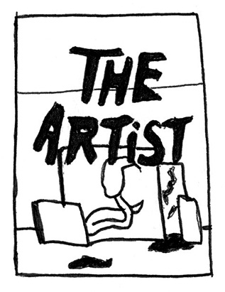
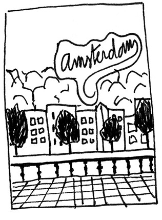
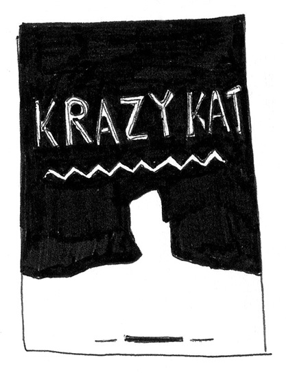
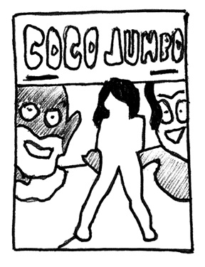
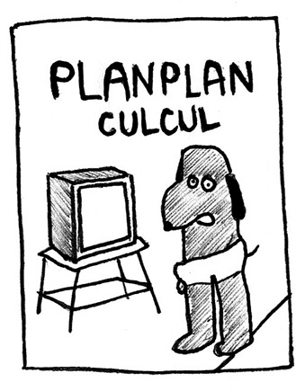
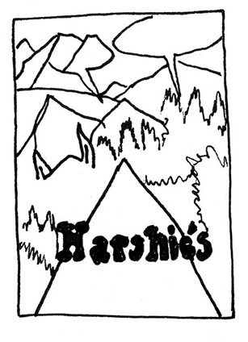
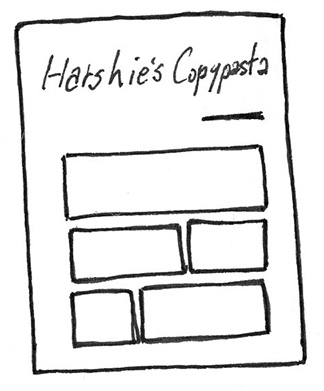

Lina Hentgen – sélection
Moitié du duo d’artiste Hippolyte Hentgen. Fusion de deux identités, c’est sur le lieu commun, l’image partagée, les codes identifiables que travaille Hippolyte Hentgen
Shit is real, Aisha Franz, L’Employé du mois, 2017
Pour son dessin faussement naïf, élégant, fait de digressions géométriques adoucies par le velouté de l’estompage. Une histoire Clowesienne [digne de Daniel Clowes, NDLR] dont les procédés narratifs mêlent rêve et réalité dans une description assez précise d’une génération bercée par le cool angeleno ou berlinois.
The Artist, Anna Haifisch, Misma, 2016
Des dessins pleins d’inventions graphiques et de clins d’œil à l’histoire de l’art ou de l’industrie du cartoon. Un récit elliptique très juste et à l’image de l’acte créatif, avec ses tensions et ses doutes
Megg Mogg and Owl, série, Simon Hanselmann, Misma
L’humour transgressif de Simon Hanselmann est vital, il est aussi joyeux que désespéré, la gentillesse et la douceur n’arrivent pas à trouver leur place dans ce monde aqueux en pleine déliquescence. Le séquençage méthodique en gaufrier sans gouttière laisse une très grande place au déploiement des dessins, c’est un petit théâtre dans lequel les personnages jouent perpétuellement leur rôle. Les lignes simples composées de couleurs à l’aquarelle directes investissent le dessin d’une aura primitive absolument géniale.
Krazy Kat, George Herriman, Les rêveurs, 2018
L’œuvre géniale de G. Herriman trouve enfin sa langue et restitue au chat et à Herriman leur véritable poésie et leur profondeur. Krazy Kat est incontestablement l’une des plus belles réalisations du XXe siècle, subtile, drôle, engagée, audacieuse, envolée, littéraire, cinématographique, romanesque, burlesque… C’est un puits sans fond d’idées, c’est un véritable rapport au monde qui nous est donné à lire. Une œuvre séminale qui a influencé une grande partie de l’art moderne et contemporain (Picasso, Guston, Fahlström etc.).
Coco Jumbo, Léon Maret, Éditions 2024, 2017
Parce que c’est bon de rire de la distance qu’il y a entre des élucubrations universitaires, un suspens foireux et des dessins « faciles » qui laissent une place humoristique à des cadrages et séquençages qui donnent le vertige graphique (dignes des plus beaux films de Kung-fu).
Planplan Culcul, Anouk Ricard, Les requins marteaux, 2013
Parce que le nul c’est bien, surtout si on parle de sexe (comme dans une série TV distendue), la naïveté ou l’économie des dessins (ligne, mise en couleur, cadrage) rendent les choses encore plus méchantes et corrosives.
 Harshie’s copypasta, tomes 1 et 2, Joe l’indien, autoédition
Comment déconstruire le comics pour adolescent Archie de John L. Goldwater, et mettre en avant la beauté des couleurs, des lignes, des systèmes d’impression par des jeux de montages, de collages et de surimpressions et de tensions qui rappellent celles de la Harsh noise. Chaque page devient un tableau abstrait où les gestes et les opérations de montage composent un nouveau récit, celui de la matière bande dessinée.